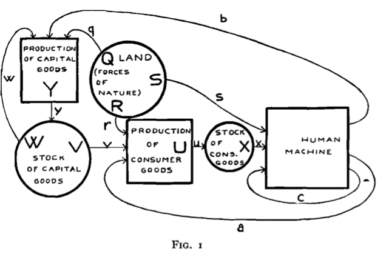
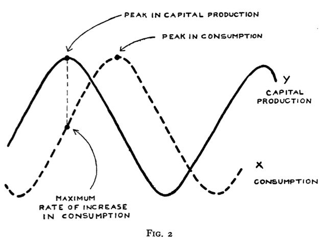
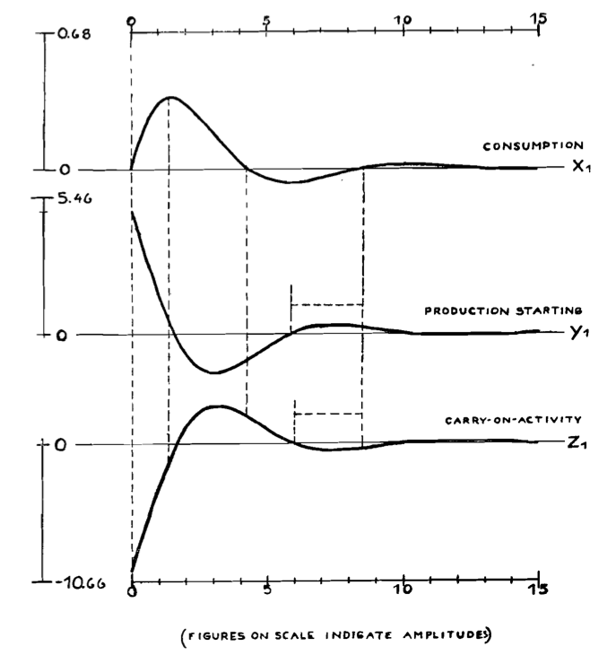

<!doctype html>
<html lang="en">

	<head>
		<meta charset="utf-8">

		<title>reveal.js - ClassHT 9</title>

		<link rel="stylesheet" href="plugin/reveal.css">
		<link rel="stylesheet" href="plugin/beige.css" id="theme">
        <link rel="stylesheet" href="plugin/monokai.css">
        <link rel="stylesheet" href="plugin/title-footer.css">
       
	</head>

	<body>

		<div class="reveal">

			<div class="slides">


                <!-- Slides are separated by three dashes (quick 'n dirty regular expression) -->
                <section data-markdown data-separator="\n---\n" data-separator-vertical="^\n--\n$">
                    <script type="text/template">
                        <!-- .slide: style="text-align: left;" -->
                        # History of Economic Analysis
                        ## Part II - Macroeconomics
                        ### Francesco Franco - Nova SBE
                         
                        ---
                       
                        
                        <!-- .slide: style="text-align: left;" -->

                        ## Econometrics
                        ### Ragnar Frisch 1895-1973 (Nobel 1969)
                        Propagation problems and impulse problems in Dynamic Economics 1933

                        > The majority of the economic oscillations which we encounter seem to
                        > be explained most plausibly as free oscillations.
                        
                        > If a cyclical variation is analysed from the point of view of a free
                        > oscillation, we have to distinguish between two fundamental problems:
                        > first, the **propagation** problem; second, the **impulse** problem. The
                        > propagation problem is the problem of explaining by the structural
                        > properties of the swinging system what the character of the swings
                        > would be in case the system was started in some initial situation.
                        
                        > This type of analysis is basically different from the kind of analysis
                        > that is represented by a system of Walrasian equations; indeed in such
                        > a system all the variables belong to the same point of time.
                         In one respect, however, must the dynamic system be similar to the Walrasian: it must be **determinate**. 
                        
                        ---
                        
                        <!-- .slide: style="text-align: left;" -->

                        Propagation problems and impulse problems in Dynamic Economics 1933


                        > The **micro-dynamic analysis is an analysis by which we try to explain
                        > in some detail the behaviour of a certain section of the huge economic
                        > mechanism, taking for granted that certain general parameters are
                        > given.** Obviously it may well be that we obtain more or less cyclical
                        > fluctuations in such sub-systems, even though the general parameters
                        > are given. The essence of this type of analysis is to show the details
                        > of the evolution of a given specific market, the behaviour of a given
                        > type of consumers, and so on.
                        
                        > The **macro-dynamic analysis**, on the other hand, **tries to give an
                        > account of the fluctuations of the whole economic system taken in its
                        > entirety**. Obviously in this case it is impossible to carry through the
                        > analysis in great detail.
                        
                        > We may perhaps start by throwing all kinds of production into one
                        > variable, all consumption into another, and so on, imagining that
                        > the notions production, consumption, and so on,'can be measured by
                        > some sort of total indices.

                        ---
                        
                        <!-- .slide: style="text-align: left;" -->

                        Propagation problems and impulse problems in Dynamic Economics 1933

                        <center></center>
                        
                        >The notation is chosen such that capital letters indicate stocks and
                        >small letters flows. For instance, R means that part of land (or other
                        >1 forces of nature) which is engaged in the production of consumer goods, r is the services rendered by R per unit time. Similarly V is
                        >the stock of capital goods engaged in the production of consumer goods
                        >and v the services rendered by this stock per unit time. Further, a is
                        >labour (manual or mental) entering into the production of consumer
                        >goods, so that the total input in the production of consumer goods
                        >is r + v + a.

                        
                        ---
                        
                        <!-- .slide: style="text-align: left;" -->

                        Propagation problems and impulse problems in Dynamic Economics 1933

                        > We shall first consider the following case. Let us assume that the
                        > yearly consumption is equal to the yearly production of consumers'
                        > goods, so that there is no stock of consumers' goods. But let us take
                        > account of the stock of fixed capital goods as an essential element of
                        > the analysis. The depreciation on this capital stock will be made up
                        > by two terms: a term expressing the depreciation caused by the use of
                        > capital goods in the production of consumers' goods, and a term caused
                        > by the use of capital goods in the production of other capital goods.
                        
                        > If $h$ and $k$ are the depreciation coefficients in the capital
                        > producing industry and in the consumer goods industry respectively,
                        > the total yearly depreciation on the nation's capital stock will be
                        > $hx+ky$, where $x$ is the yearly production of consumers' goods and
                        > $y$ the yearly production of capital goods. Our assumption amounts to
                        > saying that $h$ and $k$ are technically given constants.
                        
                        > Let total capital stock be denoted $Z$. The rate of increase of this
                        > stock will obviously be $$\dot{Z}=y-\left(hx+ky\right)$$ Since the
                        > stationary case is characterized by $\dot{Z}=0$, the stationary levels
                        > of $x$ and $y$ must obviously be connected by the relation $y=hx+ky$,
                        > i.e. $$y=mx$$
                        >
                        > where $$m=\frac{h}{1-k}$$
                        

                        ---
                        
                        <!-- .slide: style="text-align: left;" -->

                        Propagation problems and impulse problems in Dynamic Economics 1933


                        > Now let us consider the other factor that effects the annual capital
                        > production, namely, the change $\dot{x}$ the annual production of
                        > consumption goods.
                        
                        > We are thus led to assume that the yearly production of capital goods
                        > can be expressed in a form where there occurs not only the term (2)
                        > but also a term that is proportional to $x$, i.e. $y$ will be of the
                        > form $$y=mx+\mu\dot{x}$$. 
                        where $m$ and $\mu$ are constants. The constant $m$ expresses
                        the wear and tear on capital goods caused directly and indirectly
                        by the production of one unit of consumption, and $\mu$ expresses
                        the size of capital stock that is needed directly and indirectly
                        in order to produce one unit of consumption per year.
                        

                        ---
                        
                        <!-- .slide: style="text-align: left;" -->

                        Propagation problems and impulse problems in Dynamic Economics 1933

                        <center></center>


                        ---
                        
                        <!-- .slide: style="text-align: left;" -->


                        > In order to make the problem determinate we need to introduce an
                        > equation expressing the **behaviour of the consumers**. We shall do this
                        > by introducing the Walrasian idea of an encaisse desiree.
                        
                        > The encaisse desiree, **the need for cash on hand**, is made up of two
                        > parts: cash needed for the transaction of consumer goods and producer
                        > goods respectively. The first of these parts may of course always be
                        > written as a certain factor $r$ times the sale of consumer goods, and
                        > the second part as a certain factor $s$ times the production of
                        > capital goods, provided the factors $r$ and $s$ are properly defined. In
                        > other words, the encaisse desiree $\omega$ may be written
                        > $$\omega=rx+sy$$
                        
                        ---
                        
                        <!-- .slide: style="text-align: left;" -->

                        Propagation problems and impulse problems in Dynamic Economics 1933


                        > it seems plausible to assume that the encaisse desiree $\omega$ will enter
                        > into the picture as an important factor which, when increasing, will,
                        > after a certain point, tend to diminish the rate of increase of
                        > consumption. Assuming as a first approximation the relationship to be
                        > linear, we have $$\dot{x}=c-\lambda\omega$$ where $c$ and $\lambda$
                        > are positive constants. The constant $c$ expresses a tendency to
                        > maintain and perhaps expand consumption, while $\lambda$ expresses the
                        > reining-in effect of the encaisse desiree.
                        
                        > Indeed, by eliminating $\dot{x}$ we get a linear relation between $x$
                        > and $y$. \...we get a linear differential equation in a single
                        > variable. The characteristic equation is consequently of degree one,
                        > and has therefore only single real root. This means that the variables
                        > will develop monotonically as exponential functions. In other words,
                        > we shall have a secular trend but no oscillations.

                        > The system considered above is thus too simple to be able to explain
                         the developments which we know from observation of the economic world.

                    

                        

                        ---
                        
                        <!-- .slide: style="text-align: left;" -->

                        Propagation problems and impulse problems in Dynamic Economics 1933


                        > Let $y_{t}$be the quantity of capital goods whose production is
                        > started at the point of time $t$. We shall call $y_{t}$ the "capital
                        > starting" or the "production starting," and we shall assume that this
                        > magnitude is determined by an equation of the form.... A capital
                        > object whose production is started at a certain moment will
                        > necessitate a certain production activity during the following time in
                        > order to complete the object. The productive activity needed in the
                        > period following the starting of the object will, as a rule, vary in a
                        > certain fashion which we may, as a first approximation, consider as
                        > given by the technical conditions of the production. Let $D_{\tau}$ be
                        > the amount of production activity needed at the point of time $t+T$ in
                        > order to carry on the production of a unit of capital goods started at
                        > the point of time $t$. The function $D_{\tau}$ we shall call the
                        > "advancement function."
                        
                        
                        > This being so, the amount of production work that will be going on at
                        > the moment $t$ will be
                        > $$z_{t}=\int_{\tau=0}^{\infty}D_{\tau}y_{t-\tau}d\tau$$ The magnitude
                        > $z_{t}$ we shall call "the carry-on-activity" at the point of time
                        > $t$.
                        

                        ---
                        
                        <!-- .slide: style="text-align: left;" -->

                        Propagation problems and impulse problems in Dynamic Economics 1933


                        > In the formula of the encaisse desiree it is now $z$ that will occur
                        > instead of $y$, so that the consumption equation will be
                        > $$\dot{x}=c-\lambda\left(rx+sz\right)$$
                        
                        > If the carry-on function $D_{\tau}$; is given, the above system may be
                        > solved\....As an example we shall assume `$$D_{\tau}=\begin{cases}
                        > 1/\epsilon & 0<\tau<\epsilon\\
                        > 0 & \tau>\epsilon
                        > \end{cases}$$` where $\epsilon$ is a technical constant.
                        
                        > In this case we get `$$\epsilon\dot{z}_{t}=y_{t}-y_{t-\epsilon}$$`
                        
                        > This is a mixed system of differential and difference equations.
                        
                        ---
                        
                        <!-- .slide: style="text-align: left;" -->

                        Propagation problems and impulse problems in Dynamic Economics 1933


                        > In order to study the nature of the solutions, I shall now insert for
                        > the structural coefficients $\epsilon,\mu,m$ , etc., numerical values
                        > that may in a rough way express the magnitudes which we would expect
                        > to find in actual economic life. **At present I am only guessing very
                        > roughly at these parameters, but I believe that it will be possible by
                        > appropriate statistical methods to obtain more exact information about
                        > them. I think, indeed, that the statistical determination of such
                        > structural parameters will be one of the main objectives of the
                        > economic cycle analysis of the future.**

                        > The primary cycle of 8·57 years  corresponds nearly exactly to the well-known long business cycle.
                        
                

                        <center></center>

                        ---
                        
                        <!-- .slide: style="text-align: left;" -->

                        Propagation problems and impulse problems in Dynamic Economics 1933

                        
                        > I believe that the theoretical dynamic laws do have a meaning-much of the reasoning on which they are based are on a priori grounds so plausible that it is too improbable that they will have no significance. But they must not be taken as an immediate explanation of the oscillating phenomena we observe, They only form one element of the explanation: they solve the propagation problem. But the impulse problem remains.

                        > One way which I believe is particularly fruitful and promising is to
                        > study what would become of the solution of a determinate dynamic
                        > system if it were exposed to a stream of erratic shocks that
                        > constantly upsets the continuous evolution, and by so doing introduces
                        > into the system the energy necessary to maintain the swings.
                        >
                        > \...is suddenly changed from `$\dot{y}_{k}$ to $\dot{y}_{k}+e_{k}$`
                        > where $e_{k}$is the strength of the shock\...
                        >
                        > If the point $t$ is very far from the initial point $t_{0}$\... the
                        > ordinate will be $$y(t)=\sum_{k=1}^{n}Q\left(t-t_{k}\right)e_{k}$$
                        >
                        > That is to say, $y(t)$ is the result of applying a linear operator to
                        > the shocks, and the system of weights in the operator will simply be
                        > given by the shape of the time curve that would have been the solution
                        > of the determinate dynamic system in case the movement had been
                        > allowed to go on undisturbed.

                        ---
                        
                        <!-- .slide: style="text-align: left;" -->

                        ### Jan Tinbergen 1903-1994 (Nobel 1969)

                        Statistical Testing of Business Cycle Theories: Part II: Business Cycles
                        in the United States of America

                        [Book 1939](https://repub.eur.nl/pub/14937)


                        ---
                        
                        <!-- .slide: style="text-align: left;" -->


                        ### Tryge Haavelmo 1911-1999 (Nobel 1989)

                        The Statistical Implications of a System of Simultaneous Equations
                        Econometrica 1943

                        > Measurement of parameters occurring in theoretical equation systems is
                        > one of the most important problems of econometrics. If our equations
                        > were exact in the observable economic variables involved, this problem
                        > would not be one of statistics, but a purely mathematical one of
                        > solving a certain system of "observational" equations, having the
                        > parameters in question as unknowns. This might itself present
                        > complicated and interesting problems, such as the problem of whether
                        > or not there is a one-to-one correspondence between each system of
                        > values of the parameters and the corresponding set of all values of
                        > the variables satisfying the equation system. For example, if we have,
                        > simultaneously, a demand curve and a supply curve, the set of possible
                        > observations might be just one single intersection point, and knowing
                        > that only would not, in general, permit us to draw any inference
                        > regarding the slope of either curve.
                        
                        > Real statistical problems arise if the equations in question contain
                        > certain stochastical elements ("unexplained residuals"), in addition
                        > to the variables that are given or directly observable. And some such
                        > ele- ment must, in fact, be present in any equation which shall be
                        > applicable to actual observations (unless the equation in question is
                        > a trivial identity). In other words, if we consider a set of related
                        > economic variables, it is, in general, not possible to express any
                        > one of the variables as an exact function of the other variables only.
                        
                        ---
                        
                        <!-- .slide: style="text-align: left;" -->


                                               
                        The Statistical Implications of a System of Simultaneous Equations
                        Econometrica 1943

                        > For example, suppose that $X$ and $Y$ are two variables satisfying the
                        > following two stochastical relations $$Y=aX+\epsilon_{1}$$
                        > $$X=bY+\epsilon_{2}$$ where $\epsilon_{1}$ and $\epsilon_{2}$ are
                        > assumed to be distributed random variables with variances
                        > $\sigma_{1}^{2}$ and $\sigma_{2}^{2}$ respectively. respectively.
                        > Then, from perhaps think that the expected value of $Y$, given $X$,
                        > should be equal to $aX$. But if $\epsilon_{1}$ and $\epsilon_{2}$ are
                        > assumed to be independent, as assumed the statement
                        > $E\left(Y|X\right)=aX$ leads to a contradiction. This is seen as
                        > follows: $X$ and $Y$ are functions of $\epsilon_{1}$ and
                        > $\epsilon_{2}$, viz., $$Y=\frac{\epsilon_{1}+a\epsilon_{2}}{1-ab}$$
                        > $$X=\frac{b\epsilon_{1}+\epsilon_{2}}{1-ab}.$$ Therefore $X$ and $Y$
                        > are jointly normally distributed with means equal to zero. If
                        > $\rho_{XY}$ be the correlation coefficient between $X$ and $Y$ and
                        > $\sigma_{X}^{2}$ and $\sigma_{Y}^{2}$ their variances, one obtains
                        > $$E\left(X|Y\right)=\frac{\sigma_{Y}}{\sigma_{X}}\rho_{XY}=\frac{b\sigma_{1}^{2}+a\sigma_{2}^{2}}{b\sigma_{1}^{2}+\sigma_{2}^{2}}X$$
                        > the right-hand side of which is, in generally different from $aX$.
                        
                        ---
                        
                        <!-- .slide: style="text-align: left;" -->


                                               
                        The Statistical Implications of a System of Simultaneous Equations
                        Econometrica 1943

                        > In a system of equations, involving certain specified (but not
                        > observable) stochastical variables, the observable variables involved
                        > may be considered as transformations of the specified stochastical
                        > ones . Therefore, the specification of the distribution of these
                        > theoretical variables permits us, usually, to calculate the joint
                        > distribution of the observable variables, or certain properties of
                        > this distribution. This joint distribution should be studied to
                        > clarify the stochastical relationship, which the equation system
                        > implies with respect to the observable variables.


                        ---
                        
                        <!-- .slide: style="text-align: left;" -->


                                               
                        The Statistical Implications of a System of Simultaneous Equations
                        Econometrica 1943

                        Model (changing the notation)

                        `$$\begin{aligned}
                        C_{t} & =\beta+\alpha Y_{t}+\epsilon_{t}\\
                        I_{t} & =\theta\left(C_{t}-C_{t-1}\right)+\eta_{t}\\
                        Y_{t} & =C_{t}+I_{t}\end{aligned}$$`

                        Substitute for $Y_{t}$ (identity) `$$\begin{aligned}
                        C_{t}\left(1-\alpha\right)-\alpha I_{t} & =\beta+\epsilon_{t}\\
                        -\theta C_{t}+I_{t} & =-\theta C_{t-1}+\eta_{t}\end{aligned}$$` and write
                        it into a system 
                        
                        
                        `$$\begin{bmatrix}1-\alpha & -\alpha\\
                        -\theta & 1
                        \end{bmatrix}\begin{bmatrix}C_{t}\\
                        I_{t}
                        \end{bmatrix}=\begin{bmatrix}\beta\\
                        0
                        \end{bmatrix}+\begin{bmatrix}0 & 0\\
                        -\theta & 0
                        \end{bmatrix}\begin{bmatrix}C_{t-1}\\
                        I_{t-1}
                        \end{bmatrix}+\begin{bmatrix}\epsilon_{t}\\
                        \eta_{t}
                        \end{bmatrix}$$ $$\Gamma_{0}X_{t}=C+\Gamma_{1}X_{t-1}+U_{t}$$` where
                        $U_{t}\sim N\left(0,D\right)$ and assume further: 1) that $U_{t}$ is
                        independent of $U_{\tau}$ for $t\neq\tau$ and 2) that $U_{t}$ is
                        independent of $X_{\tau}$ for all $t$ and $\tau$. The likelihood in a
                        dynamic setting The starting point is to have the joint probability
                        distribution of $f_{X^{T}}(X^{T};\psi)$ where
                        $X^{T}=X_{T},X_{T-1},..,X_{0}$ is the all sample , $\psi$ are the
                        parameters, and treat is as the likelihood to be maximized.

                        ---
                        
                        <!-- .slide: style="text-align: left;" -->


                                               
                        The Statistical Implications of a System of Simultaneous Equations
                        Econometrica 1943

                        In dynamic settings the marginalization of the joint probability
                        distribution of the data is essential to overcome the time
                        interdependence between the observations.

                        Start by the distribution of the first observation to be
                        $f_{X_{0}}(X_{0};\psi)$ (in a stationary environment think of the
                        unconditional distribution) then consider writing the joint distribution
                        of the first and second observation as the production of the conditional
                        distribution and the marginal distribution:
                        
                        `$$\begin{aligned}
                        f_{X_{1}}(X_{1},X_{0};\psi) & =f_{X_{1}|X_{0}}\left(X_{1}|X_{0};\psi\right)f_{X_{0}}(X_{0};\psi)\end{aligned}$$`

                        from distribution and the marginal distribution: 
                        
                        `$$\begin{aligned}
                        f_{X_{1}}(X_{1},X_{0};\psi) & =f_{X_{1}|X_{0}}\left(X_{1}|X_{0};\psi\right)f_{X_{0}}(X_{0};\psi)\end{aligned}$$`

                        you can do that for the whole sample and get

                        `$$f_{X^{T}}(X^{T};\psi)=f_{X_{0}}(X_{0};\psi)\prod_{t=1}^{T}f_{X_{t}|X_{t-1}}\left(X_{t}|X_{t-1};\psi\right)$$`

                        or in logs

                        `$$L(\psi)=log\left(f_{X_{0}}(X_{0};\psi)\right)+\sum_{t=1}^{T}log\left(f_{X_{t}|X_{t-1}}\left(X_{t}|X_{t-1};\psi\right)\right)$$`

                        ---
                        
                        <!-- .slide: style="text-align: left;" -->


                                               
                        The Statistical Implications of a System of Simultaneous Equations
                        Econometrica 1943

                        Back to the model

                        Obtain the reduced form by inverting $\Gamma_{0}$ (must be invertible to
                        go back structure of the model) and obtain the reduced form:
                        `$$X_{t}=\Gamma_{0}^{-1}C+\Gamma_{0}^{-1}\Gamma_{1}X_{t-1}+\Gamma_{0}^{-1}U_{t}$$`
                        `$$X_{t}=A+BX_{t-1}+V_{t}$$` where $V_{t}\sim N\left(0,\Omega\right)$, and
                        `$$\begin{aligned}
                        f(X_{t}|X_{t-1}) & =N\left(A+BX_{t-1},\Omega\right)\\
                        & =N\left(\Gamma_{0}^{-1}C+\Gamma_{0}^{-1}\Gamma_{1}X_{t-1},\Gamma_{0}^{-1}D\left(\Gamma_{0}^{-1}\right)'\right)\end{aligned}$$`

                        ---
                        
                        <!-- .slide: style="text-align: left;" -->


                                               
                        The Statistical Implications of a System of Simultaneous Equations
                        Econometrica 1943
                        The Log-likehood of the reduced form is `$$\begin{aligned}
                        L(\psi_{r}) & =-Tn/2+T/2log\left|\Omega^{-1}\right|\\
                        & -0.5\sum_{t=1}^{T}\left[\left(X_{t}-A-BX_{t-1}\right)'\Omega^{-1}\left(X_{t}-A-BX_{t-1}\right)\right]\end{aligned}$$`
                        which you can write in terms of the structural model as
                        `$$\begin{aligned}
                        L(\psi) & =-\left(Tn/2\right)+\left(T/2\right)log\left|\Gamma_{0}\right|^{2}-\left(T/2\right)log\left|D\right|\\
                        & -0.5\sum_{t=1}^{T}\left[\left(\Gamma_{0}X_{t}-C-\Gamma_{1}X_{t-1}\right)'D^{-1}\left(\Gamma_{0}X_{t}-C-\Gamma_{1}X_{t-1}\right)\right]\end{aligned}$$`
                        and find the parameters by maximizing it (can use the reduced form if
                        exactly identified, order and rank condition)

                        ---
                        
                        <!-- .slide: style="text-align: left;" -->


                                               
                        
                        The Probability Approach in Econometrics Econometrica 1944

                        > The patient reader, now at the end of our analysis, might well be left
                        > with the feeling that the approach we have outlined, although simple
                        > in point of principle, in most cases would involve a tremendous amount
                        > of work. He might remark, sarcastically, that it would take him a
                        > lifetime to obtain one single demand elasticity. And he might be
                        > inclined to wonder: Is it worth while? Can we not get along, for
                        > practical purposes, by the usual short-cut methods, by graphical
                        > curve- fitting, or by making fair guesses combining our general
                        > experiences with the inference that appears reasonable from the
                        > particular data at hand?
                        >
                        > In other quantitative sciences the discovery of laws, even in highly
                        > specialized fields, has moved from the private study into huge
                        > scientific laboratories where scores of experts are engaged, not only
                        > in carrying out actual measurements, but also in working out, with
                        > painstaking precision, the form ulae t ments to be made. Should we
                        > expect less in economic research, if its results are to be the basis
                        > for economic policy upon which might depend billions of dollars of
                        > national income and the general economic welfare of millions of
                        > people?


                        ---


                        <!-- .slide: style="text-align: left;" -->
                        ### References
                       
                        - Ragnar Frisch 1933 Propagation problems and impulse problems in Dynamic Economics.
                        
                        - Tryge Haavelmo 1943 The Statistical Implications of a System of Simultaneous Equations.

                        - Tryge Haavelmo 1944 The Probability Approach in Econometrics Econometrica.

                        - Sandmo, Agnar.  (2011).  Economics evolving : a history of economic thought.  Princeton, N.J :  Princeton University Press.

                       
                    </script>
                </section>

            </div>
		</div>

		<script src="plugin/reveal.js"></script>
        <script src="plugin/markdown.js"></script>
        <script src="plugin/highlight.js"></script>
        <script src="plugin/notes.js"></script>
        <script src="plugin/plugin.js"></script>
        <script src="plugin/math.js"></script>
        <script src="plugin/plugin.js"></script>
        <script src="plugin/menu.js"></script>
        <script src="plugin/pdfexport.js"></script>
		<script>

			Reveal.initialize({
				controls: true,
				progress: true,
				history: true,
                center: true,
                touch: true,

                menu: {
                    // Specifies which side of the presentation the menu will
                    // be shown. Use 'left' or 'right'.
                    side: 'left',

                    // Specifies the width of the menu.
                    // Can be one of the following:
                    // 'normal', 'wide', 'third', 'half', 'full', or
                    // any valid css length value
                    width: 'normal',

                    // Add slide numbers to the titles in the slide list.
                    // Use 'true' or format string (same as reveal.js slide numbers)
                    numbers: true,

                    // Specifies which slide elements will be used for generating
                    // the slide titles in the menu. The default selects the first
                    // heading element found in the slide, but you can specify any
                    // valid css selector and the text from the first matching
                    // element will be used.
                    // Note: that a section data-menu-title attribute or an element
                    // with a menu-title class will take precedence over this option
                    titleSelector: 'h1, h2, h3, h4, h5, h6',

                    // If slides do not have a matching title, attempt to use the
                    // start of the text content as the title instead
                    useTextContentForMissingTitles: false,

                    // Hide slides from the menu that do not have a title.
                    // Set to 'true' to only list slides with titles.
                    hideMissingTitles: false,

                    // Adds markers to the slide titles to indicate the
                    // progress through the presentation. Set to 'false'
                    // to hide the markers.
                    markers: true,

                    // Specify custom panels to be included in the menu, by
                    // providing an array of objects with 'title', 'icon'
                    // properties, and either a 'src' or 'content' property.
                    custom: false,

                    // Specifies the themes that will be available in the themes
                    // menu panel. Set to 'true' to show the themes menu panel
                    // with the default themes list. Alternatively, provide an
                    // array to specify the themes to make available in the
                    // themes menu panel, for example...
                    //
                    // [
                    //     { name: 'Black', theme: 'dist/theme/black.css' },
                    //     { name: 'White', theme: 'dist/theme/white.css' },
                    //     { name: 'League', theme: 'dist/theme/league.css' },
                    //     {
                    //       name: 'Dark',
                    //       theme: 'lib/reveal.js/dist/theme/black.css',
                    //       highlightTheme: 'lib/reveal.js/plugin/highlight/monokai.css'
                    //     },
                    //     {
                    //       name: 'Code: Zenburn',
                    //       highlightTheme: 'lib/reveal.js/plugin/highlight/zenburn.css'
                    //     }
                    // ]
                    //
                    // Note: specifying highlightTheme without a theme will
                    // change the code highlight theme while leaving the
                    // presentation theme unchanged.
                    themes: false,

                    // Specifies the path to the default theme files. If your
                    // presentation uses a different path to the standard reveal
                    // layout then you need to provide this option, but only
                    // when 'themes' is set to 'true'. If you provide your own
                    // list of themes or 'themes' is set to 'false' the
                    // 'themesPath' option is ignored.
                    themesPath: 'dist/theme/',

                    // Specifies if the transitions menu panel will be shown.
                    // Set to 'true' to show the transitions menu panel with
                    // the default transitions list. Alternatively, provide an
                    // array to specify the transitions to make available in
                    // the transitions panel, for example...
                    // ['None', 'Fade', 'Slide']
                    transitions: false,

                    // Adds a menu button to the slides to open the menu panel.
                    // Set to 'false' to hide the button.
                    openButton: true,

                    // If 'true' allows the slide number in the presentation to
                    // open the menu panel. The reveal.js slideNumber option must
                    // be displayed for this to take effect
                    openSlideNumber: false,

                    // If true allows the user to open and navigate the menu using
                    // the keyboard. Standard keyboard interaction with reveal
                    // will be disabled while the menu is open.
                    keyboard: true,

                    // Normally the menu will close on user actions such as
                    // selecting a menu item, or clicking the presentation area.
                    // If 'true', the sticky option will leave the menu open
                    // until it is explicitly closed, that is, using the close
                    // button or pressing the ESC or m key (when the keyboard
                    // interaction option is enabled).
                    sticky: false,

                    // If 'true' standard menu items will be automatically opened
                    // when navigating using the keyboard. Note: this only takes
                    // effect when both the 'keyboard' and 'sticky' options are enabled.
                    autoOpen: true,

                    // If 'true' the menu will not be created until it is explicitly
                    // requested by calling RevealMenu.init(). Note this will delay
                    // the creation of all menu panels, including custom panels, and
                    // the menu button.
                    delayInit: false,

                    // If 'true' the menu will be shown when the menu is initialised.
                    openOnInit: false,

                    // By default the menu will load it's own font-awesome library
                    // icons. If your presentation needs to load a different
                    // font-awesome library the 'loadIcons' option can be set to false
                    // and the menu will not attempt to load the font-awesome library.
                    loadIcons: true
                },

                dependencies:
                [
                    { src: 'plugin/title-footer.js', async: true, callback: function() { title_footer.initialize(); } }
                ],
                math: {
                    mathjax: 'https://cdn.jsdelivr.net/gh/mathjax/mathjax@2.7.8/MathJax.js',
                    config: 'TeX-AMS_HTML-full',
                    // pass other options into `MathJax.Hub.Config()`
                    TeX: { Macros: { RR: "{\\bf R}" } }
                    },
        
                chalkboard: {
                    boardmarkerWidth: 3,
                    chalkWidth: 2.5,
                    chalkEffect: 1,
                    src: null,
                    readOnly: undefined,
                    toggleChalkboardButton: { left: "90px", bottom: "30px", top: "auto", right: "auto" },
                    toggleNotesButton: { left: "60px", bottom: "30px", top: "auto", right: "auto" },
                    transition: 800,
                    theme: "whiteboard",
                    background: [ 'rgba(127,127,127,.1)' , path + 'img/whiteboard.png' ],
                    grid: { color: 'rgba(127,127,127,.1)', distance: 80, width: 0.01},
                    eraser: { src: path + 'img/sponge.png', radius: 20},
                    boardmarkers : [
                            { color: 'rgba(127,127,127,1)', cursor: 'url(' + path + 'img/boardmarker-black.png), auto'},
                            { color: 'rgba(30,144,255, 1)', cursor: 'url(' + path + 'img/boardmarker-blue.png), auto'},
                            { color: 'rgba(220,20,60,1)', cursor: 'url(' + path + 'img/boardmarker-red.png), auto'},
                            { color: 'rgba(50,205,50,1)', cursor: 'url(' + path + 'img/boardmarker-green.png), auto'},
                            { color: 'rgba(255,140,0,1)', cursor: 'url(' + path + 'img/boardmarker-orange.png), auto'},
                            { color: 'rgba(150,0,20150,1)', cursor: 'url(' + path + 'img/boardmarker-purple.png), auto'},
                            { color: 'rgba(255,220,0,1)', cursor: 'url(' + path + 'img/boardmarker-yellow.png), auto'}
                    ],
                    chalks: [
                            { color: 'rgba(255,255,255,0.5)', cursor: 'url(' + path + 'img/chalk-white.png), auto'},
                            { color: 'rgba(96, 154, 244, 0.5)', cursor: 'url(' + path + 'img/chalk-blue.png), auto'},
                            { color: 'rgba(237, 20, 28, 0.5)', cursor: 'url(' + path + 'img/chalk-red.png), auto'},
                            { color: 'rgba(20, 237, 28, 0.5)', cursor: 'url(' + path + 'img/chalk-green.png), auto'},
                            { color: 'rgba(220, 133, 41, 0.5)', cursor: 'url(' + path + 'img/chalk-orange.png), auto'},
                            { color: 'rgba(220,0,220,0.5)', cursor: 'url(' + path + 'img/chalk-purple.png), auto'},
                            { color: 'rgba(255,220,0,0.5)', cursor: 'url(' + path + 'img/chalk-yellow.png), auto'}
                    ]
                },
                

				plugins: [ RevealMarkdown, RevealHighlight, RevealNotes,RevealMath, RevealMenu, RevealChalkboard, PdfExport]
			});

		</script>

	</body>
</html>
